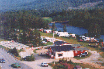
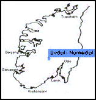
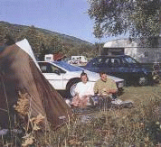

This page is also available in english.
UVDAL CAMPING
3632 UVDAL
TLF/FAX: 32 74 31 08
MOBILE: 94 24 07 96
NAF ***, NCC, ANWB
FASILITETER:
- Hytter
-
- 10 små hytter (ett rom, 2-4 personer) kjøleskap, kokemuligheter
- 2 hytter med ett soverom (4 personer) kjøleskap, kokemuligheter,
steikeovn, farge-TV
- 3 hytter med to soverom (4 personer) kjøleskap, kokemuligheter,steikeovn,
farge-TV og WC
- Campingvogn:
- 50 plasser - 30 med elektrisk strømuttak
- Sanitæranlegg:
- Dusj, vaskemaskin, tørketrommel og oppvaskkum
- Kjemikalietoalett:
- Tømmested for kjemikalietoalett (kun for campingens gjester)
- Resepsjon/kiosk:
- Litt utvalgte matvarer som brød, melk osv, samt frimerker, postkort og leker.
- Aktiviteter:
- Minigolf, fisking, kanopadling og sykling. Lekeplass for
barn og elv for svømming. Det er også flere kulturtilbud området.

Rute 40 - “Sølvveien”
Strekningen mellom Larvik og
Geilo går også under navnet “Sølvveien”, og er et resultat
av sølvverksdriften på Kongsberg, hvor
store mengder sølv ble transportert til Drammen for videre foredling.
Områdene rundt byen ble også sterkt preget av sølvverksdriften i
Kongsberg i årene 1624-1957.
Hvis du begynner reisen i Larvik
og kjører nordover mot Kongsberg vil du passere mange interessante
landemerker. Numedal er rik på kulturminner. Her finner du bl a
landets største samling av trehus fra middelalderen med over 40
bevarte bygninger (1150-1537). Du finner Norges eldste bebodde trehus,
Alfstadloftet i Rollag med runeinskripsjon
fra det 12. århundre samt Norges største samling av stavkirker
(Rollag, Flesberg, Nore og Uvdal).
Forfedrene våre har benyttet
Numedal som samferdselsåre mellom øst og vest i 4000-5000 år. De som
kom fra vest ble kalt “nordmenn”, derav navnet
Nordmannslepene. Om du liker å gå i fjellet vil du finne mange merkede
turstier samt betjente og ubetjente hytter.
Også i våre dager går den korteste veien fra Oslo til Bergen gjennom Numedal.
Stadig flere velger RV 40 som reiserute.
GOD TUR!